User manual · v0.1.0
Using TellusLEM
A practical guide for civil engineers: draw the slope, give the soils their strength, add water and loads, press Calculate and read the factor of safety. Each step below matches a tab in the program.
1. Install
macOS (Apple silicon and Intel)
- Download TellusLEM-0.1.0-macos-universal.zip from the download section and double-click it to unzip.
- Drag TellusLEM.app into Applications.
- The first time, right-click the app and choose Open, then Open again. The app is not notarised by Apple, so a normal double-click is blocked only on this first run.
Windows 10 and 11 (64-bit)
- Download TellusLEM-0.1.0-windows-x64.zip, right-click it and choose Extract All.
- Open the extracted folder and double-click tellus-lem.exe.
- If Windows SmartScreen appears, click More info → Run anyway. Keep tigrim.exe in the same folder: the chat assistant needs it.
No installation of Python, a database or a licence server is needed. Projects are saved as .tlem files that you can e-mail or keep in version control.
2. The screen at a glance
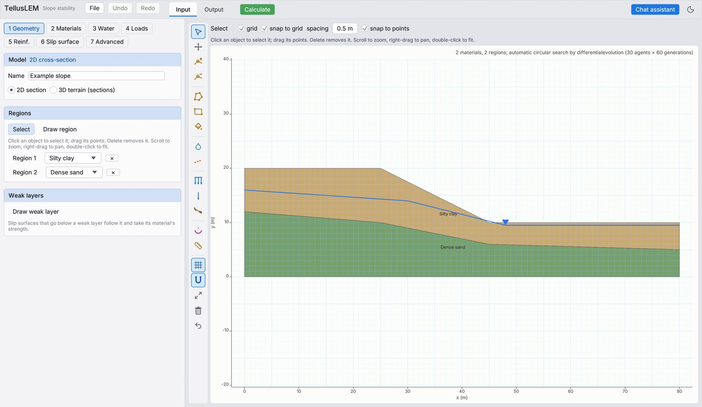
3. Your first analysis in 5 minutes
- File → New: example slope. A 10 m high slope of silty clay over dense sand with a water table appears.
- Open 2 Materials and check the strengths (c′ and φ′) and unit weights. Change a value and press Enter.
- Press the green Calculate. The program searches thousands of trial slip surfaces; a small example takes 1–2 seconds.
- The Output view opens with the factor of safety, the critical slip surface and the factor by all ten methods.
- File → Save project to keep the model, or File → Write report (PDF) for a calculation report.
To start your own slope, use File → New: empty section and follow sections 4 to 9 in order.
4. Step 1 · Geometry
The cross-section is made of regions (closed polygons), one per soil or rock zone. Regions must share their edges exactly; use snap to points so a new region starts on the corners of the old one. Choose 2D section here, or 3D terrain to cut sections from a terrain model (section 12).
- Choose the Draw region tool (polygon) or the Rectangle tool.
- Click the corners. Close the region by clicking the first point again or by double-clicking.
- For exact coordinates, type a point as x, y in the box above the drawing (for example
25, 20) and press Enter. - In the Regions list on the left, pick each region's material.
| Tool | What it does |
|---|---|
| Select | Click an object to select it and drag its points. Delete removes it. |
| Move | Move a whole object. |
| Add point / Delete point | Add a point on an edge (shared edges get it too), or remove a point from every region and line that uses it. |
| Draw region / Rectangle | Draw a polygon by its corners, or a rectangle by two opposite corners. |
| Assign material | Click regions to give them the current material. |
| Water level | Draw a piezometric line (section 6). |
| Weak layer | Draw a thin weak plane; slip surfaces below it follow it and take its strength. |
| Surcharge / Point load | Add loads (section 7). |
| Reinforcement | Anchors, nails, geosynthetics, piles (section 8). |
| Slip surface | Draw a fully specified slip surface to check one surface. |
| Measure | Distance, slope and angle between two points. |
| Grid / Snap / Fit / Delete / Undo | Show the grid, snap to points and grid, fit the view, delete the selection, undo (⌘Z / Ctrl+Z). |
Extend the section about three slope heights beyond the crest and the toe, so the critical slip surface is not cut off by the model edge.
5. Step 2 · Materials
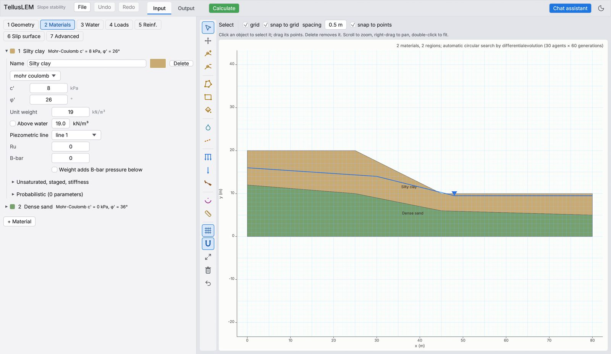
- Click a material to open it, or + Material to add one. Give it a name and a colour.
- Choose the strength model. Most soils use Mohr-Coulomb (c′ in kPa, φ′ in degrees); soft clay in a short-term case uses Undrained (su), or su increasing with depth. Hoek–Brown, SHANSEP, bilinear, anisotropic and others are in the same list.
- Enter the unit weight (kN/m³). Tick Above water to give a different weight above the water table.
- Choose which Piezometric line gives this material its pore pressure, or enter Ru or B-bar if you use those methods.
- Use Impenetrable for bedrock: slip surfaces stop at it.
6. Step 3 · Water
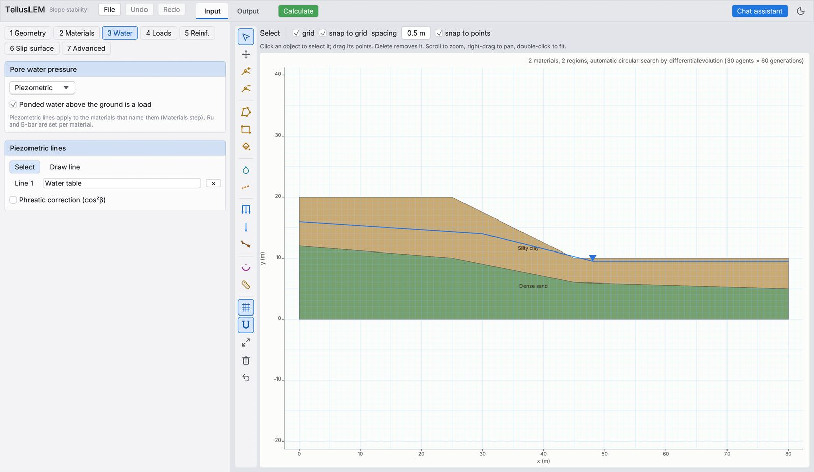
- Choose the method: Piezometric (lines), Ru, B-bar, Spatial (measured points, interpolated) or None.
- Click Draw line and click the water table from left to right; double-click or Enter to finish.
- Tick Ponded water above the ground is a load for a reservoir or a pond: the water then pushes on the ground surface.
- Tick Phreatic correction (cos²β) for seepage parallel to a sloping water table, which gives the correct, smaller pore pressure.
A water line only acts in the materials that name it in Step 2. If the factor does not change when you move the water table, check that the material uses the line.
7. Step 4 · Loads and seismic
- Draw surcharge: click the top line of the load; its height above the ground times the unit weight is the pressure (for example 1 m at 20 kN/m³ = 20 kPa). Double-click to finish.
- Point load: click where it acts and enter its components in kN per metre run (negative acts downward).
- Seismic: enter kh (horizontal, acting in the direction of sliding) and kv (adds to the weight) in g.
8. Step 5 · Reinforcement
Click Draw reinforcement, click the start at the slope face, then the end. Choose the type (anchor, soil nail, geosynthetic, pile or a user-defined force) and its capacity, pull-out resistance and out-of-plane spacing. The program adds the force where a slip surface crosses the reinforcement.
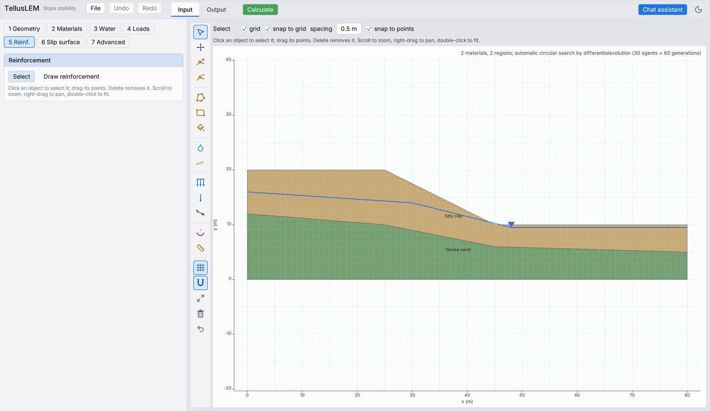
9. Step 6 · Slip surface and method
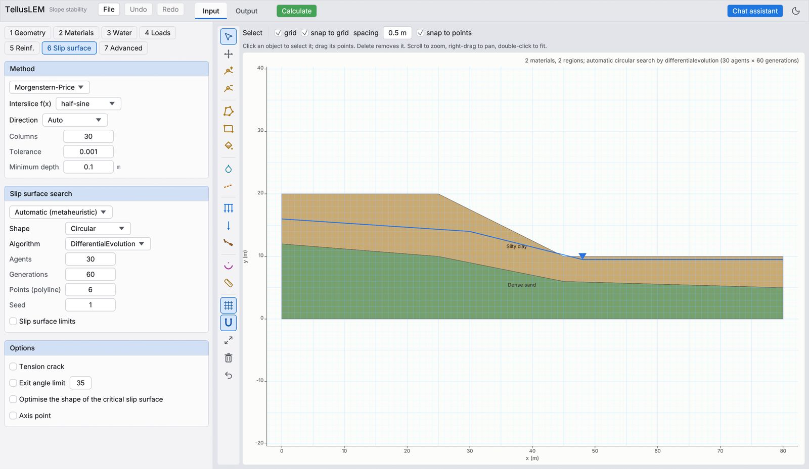
Method
Morgenstern–Price with the half-sine function is the default and suits most slopes. Bishop simplified is quick for circles. Every run also reports the factor by all ten methods, so you can compare without recalculating.
Columns 30–50 is enough; Minimum depth skips shallow surface slips (use 1–3 m for overall stability of a frictional slope).
Search
Automatic (default) searches circles, polylines or splines by itself. Entry and exit: you click the ranges on the ground where slips may start and end. Grid and radius: the classic grid of centres. Block: wedge-type failures along a weak zone. Fully specified: check a surface you drew.
Tick Optimise the shape to refine the critical surface into a non-circular one.
Tension crack removes the top of the slip in a cracked crust (optionally water-filled). Exit angle limit keeps exits from becoming unrealistically steep.
10. Step 7 · Advanced analyses
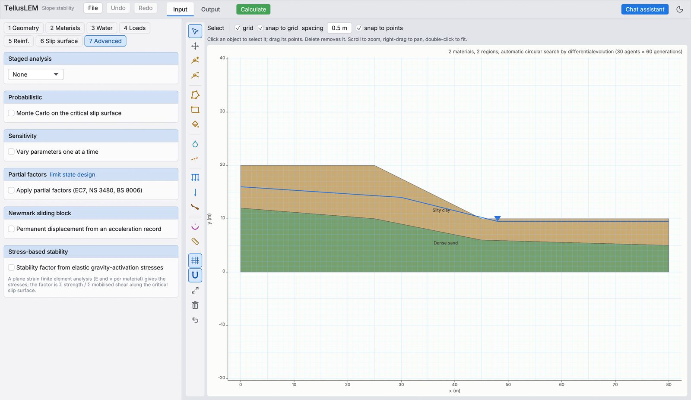
- Staged analysis: rapid drawdown (Duncan, Wright and Wong three-stage) and staged pseudo-static. For drawdown, draw two water lines (before and after) and give the R envelope in Step 2.
- Probabilistic: Monte Carlo or Latin hypercube on the critical surface; gives the probability of failure and the reliability index.
- Sensitivity: varies one parameter at a time.
- Partial factors: limit state design (EC7, NS 3480, BS 8006).
- Newmark: permanent displacement from an acceleration record.
- Stress-based stability: the factor from finite element stresses along the critical surface.
11. Reading the results
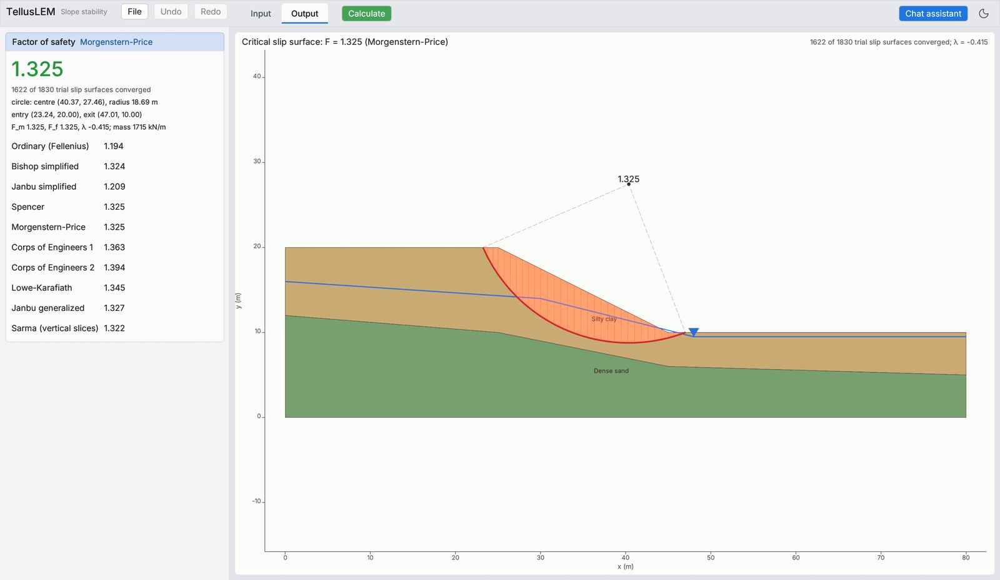
- The large number is the factor of safety of the critical slip surface by the chosen method (green when it is comfortably above 1, orange or red when it is low).
- Below it: how many trial surfaces converged, the circle (centre and radius) or the entry and exit points, Fm, Ff and λ, and the weight of the sliding mass.
- The list gives the factor of the same surface by every method: Ordinary, Bishop, Janbu, Spencer, Morgenstern–Price, Corps of Engineers 1 and 2, Lowe–Karafiath, Janbu generalized and Sarma.
- The drawing shows the critical surface, the sliding mass and its columns.
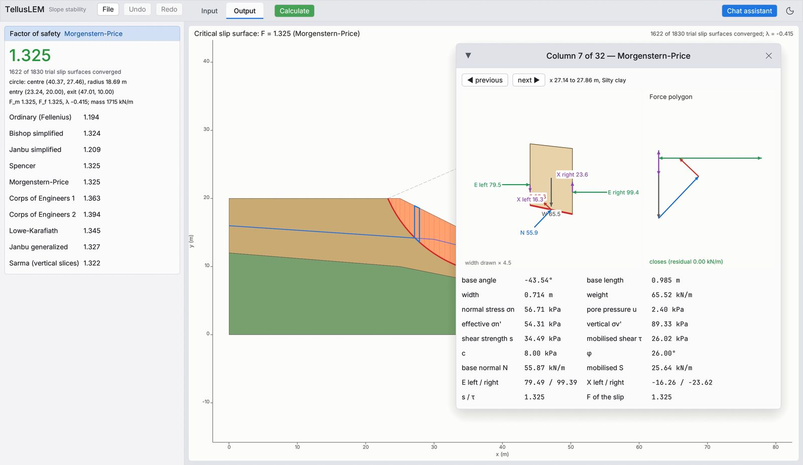
A closed force polygon (small residual) confirms the column is in equilibrium. Negative normal stresses near the crest suggest a tension crack.
Reports. File → Write report (PDF) writes a calculation report with the model, the critical surface, the trial surfaces and the results. Typical required factors: 1.5 long term, 1.3 end of construction, 1.0–1.1 pseudo-static (check your national code).
12. 3D terrain
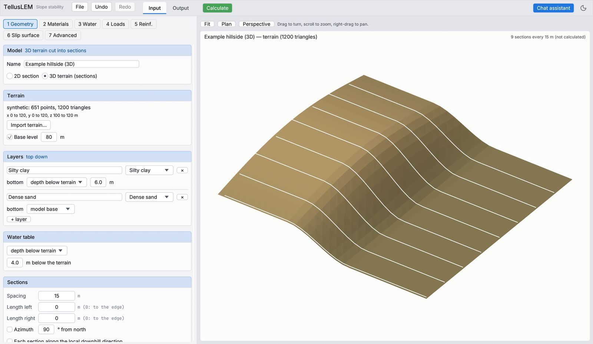
- In 1 Geometry choose 3D terrain (sections), then Import terrain… and pick a LandXML, DXF (3D faces or contours), XYZ/CSV, OBJ or STL file. File → New: 3D terrain example gives a ready example.
- Layers: add the layers top down; give each bottom as a depth below the terrain, an elevation, or an imported surface. The last layer reaches the model base.
- Water table: a depth below the terrain, an elevation or an imported surface.
- Sections: the spacing (m), the section length to each side, and the direction (azimuth, an alignment you draw in plan, or the local downhill direction).
- Press Calculate: every section is analysed and the critical one is reported.
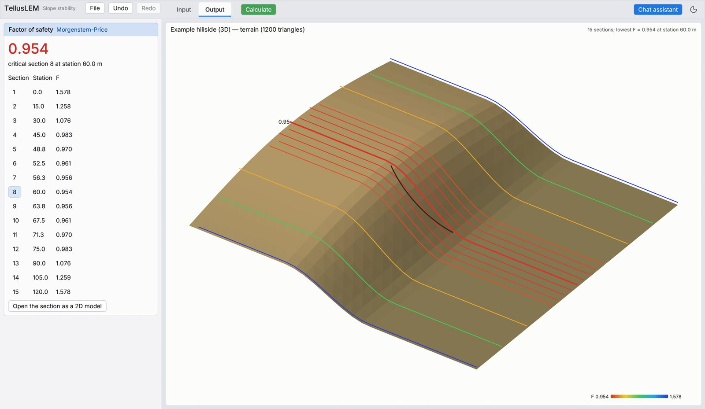
Drag to turn the 3D view, scroll to zoom, right-drag to pan; Plan and Perspective switch the view. Click a section number in the table to see that section with its slip surface, and Open the section as a 2D model to study it in detail (Undo brings the 3D model back).
13. Chat assistant
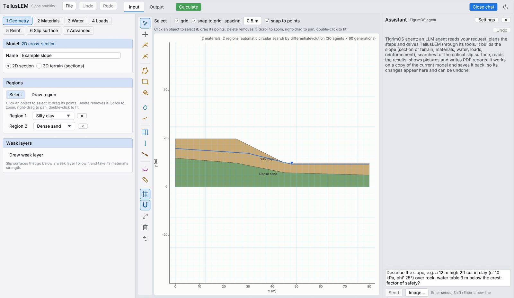
- Create an API key at openrouter.ai/keys (OpenRouter gives access to many language models; you pay them for what you use).
- Click Chat assistant → Settings. The default engine is already filled in: API URL
https://openrouter.ai/api/v1, modeldeepseek/deepseek-v4.1-flash-1017. - Paste your key in API key and click Save key, then Done. The key is stored only on your computer.
- Describe the slope, for example: “A 12 m high 2:1 cut in clay (c′ 10 kPa, φ′ 25°) over rock, water table 3 m below the crest. Factor of safety?” and press Enter. You can also attach a sketch with Image….
The assistant edits the same model you see, and every change can be undone. Check what it built in the Input view before you use its numbers, as you would check a junior engineer's model.
14. Connect an AI agent (MCP)
TellusLEM includes an MCP server (Model Context Protocol). Any MCP-capable assistant (Claude Code, Claude Desktop, Cursor, VS Code, Codex, Gemini CLI) can then build slopes, calculate and read results with 29 tools. Replace /path/to/tellus-lem with where the program is:
- macOS:
/Applications/TellusLEM.app/Contents/MacOS/tellus-lem - Windows:
C:\TellusLEM\tellus-lem.exe(the folder you extracted)
Run once in a terminal; the tools appear in new Claude Code sessions.
claude mcp add -s user tellus-lem -- /Applications/TellusLEM.app/Contents/MacOS/tellus-lem --mcp
Open Settings → Developer → Edit Config and add, then restart Claude Desktop:
{
"mcpServers": {
"tellus-lem": {
"command": "/Applications/TellusLEM.app/Contents/MacOS/tellus-lem",
"args": ["--mcp"]
}
}
}
In the MCP settings (Cursor: Settings → MCP → Add new server), add:
{
"mcpServers": {
"tellus-lem": { "command": "C:\\TellusLEM\\tellus-lem.exe", "args": ["--mcp"] }
}
}
Create .vscode/mcp.json in your project (Copilot agent mode):
{
"servers": {
"tellus-lem": { "type": "stdio", "command": "/path/to/tellus-lem", "args": ["--mcp"] }
}
}
For agents on other computers, start one server with a secret token, then connect each agent to its address:
tellus-lem --mcp --http 0.0.0.0:8787 --token YOUR-LONG-SECRET --root ~/tellus-work
claude mcp add --transport http tellus-lem http://SERVER:8787/mcp --header "Authorization: Bearer YOUR-LONG-SECRET"
Each agent gets its own model. Use it on a local network or VPN, or behind an HTTPS proxy on the internet. Files can only be read and written inside --root.
Then just ask
“Build a 15 m high cut at 1.5H:1V in residual soil (c′ 5 kPa, φ′ 30°, 18.5 kN/m³) over weathered granite. Water table 4 m below the crest. Find the critical circle with Morgenstern–Price and show it.”
“Open project.tlem, raise the water table to the ground and tell me how much the factor drops.”
“Import site.xml, cut sections every 20 m and tell me which section is critical. Write a PDF report.”
The agent reports only numbers that TellusLEM returns, but it can misread a description. Open the saved .tlem in the app to check the model it built.
15. Tips and troubleshooting
- The factor is very low and the slip surface is a thin sliver at the face.
- A cohesionless surface layer gives infinite-slope slips. Set a Minimum depth (1–3 m) in Step 6 for overall stability, and check the surface slip separately.
- “No slip surface converged” or few converged trials.
- The search does not fit the geometry: widen the model, use Entry and exit ranges on the slope, or check for gaps or overlaps between regions (Select a region and look at its points).
- Moving the water table does not change the factor.
- The material does not use that line: set Piezometric line in Step 2.
- A note says the pore pressure exceeds the vertical stress.
- The water input gives zero effective stress somewhere on the slip surface. Check measured pore pressures and the water table near the ground surface.
- Spencer or Morgenstern–Price give no answer but Bishop does.
- Often a stiff crust in tension: add a Tension crack in Step 6.
- The chat says no key or cannot reach the model.
- Open Chat assistant → Settings, paste the OpenRouter key and click Save key; check the internet connection.
Questions or problems: tellusfem@gmail.com. The method and its verification are described in the paper.